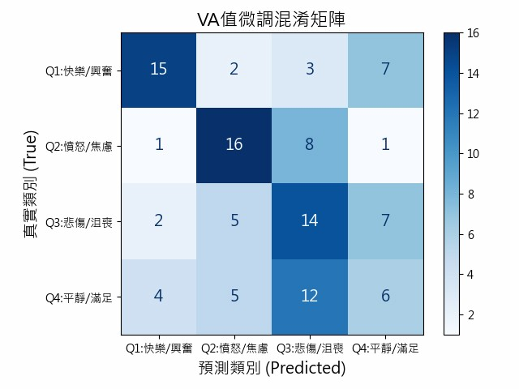

BERT微調【VA值】
傳統情緒詞典最大的限制在於採用「全域靜態數值」，同一個詞彙在任何情境下都會被賦予固定的情緒分數，因而忽略了歌詞中最重要的語境變化。為了解決此問題，本研究導入 BERT 的上下文感知技術，使模型能夠理解語境並進行情緒判斷。簡單來說就是在詞典裝上環境雷達：
1. 讀取語境：模型先讀取整句歌詞，理解當下的語意與情緒氛圍。
2. 動態微調：根據上下文特徵，對詞典中的原始 VA 值進行動態加權與調整。
透過此方法，可以實現情緒的去標籤化。詞彙的情緒不再是固定不變的，而是由語境所決定。讓同一個詞在不同歌詞情境中呈現不同的情緒，進而更準確地還原歌詞所表達的情感。
♬判斷方式
模型一開始會讀取歌詞中的詞彙與其原始 VA 值（如「眼淚」），接著BERT 會去看前後語境，例如「終於」或「離開」這些關鍵詞，最後再根據這些語境去調整 VA 值，讓情緒判斷更貼近歌詞真正的意思。
VA值
(-2.0，1.0)
重逢
分手
流下了眼淚...」
VA值
(-2.0，1.0)
只剩下眼淚...」
VA值
(-2.5，1.0)
微調
[終於]
(3.5，3.0)
[離開]、[只剩下]
(-3.8，-1.5)
核心：導入 BERT 微調模型
「終於等到你，流下了眼淚...」
→ 偵測語境 [終於]
輸出：VA值 (3.5, 3.0)
「你轉身離開，只剩下眼淚...」
→ 偵測語境 [離開]、[只剩下]
輸出：VA值 (-3.8, -1.5)
♬混淆矩陣分析
此圖為VA 值微調模型的混淆矩陣，用來觀察模型在四個情緒象限（Q1～Q4）上的分類表現。
四象限預測正確數量:
Q1：15筆
Q2：16筆
Q3：14筆
Q4：6筆
- 總樣本數：108
- 預測正確筆數：51
- 成功機率：47.22%

圖8、VA值微調的混淆矩陣
在四個象限中，Q2（憤怒／焦慮） 表現最佳，正確預測為 16 筆，Q1（快樂／興奮）次之，正確預測為 15 筆，顯示模型對於高能量負向情緒具有較好的辨識能力。
Q3（悲傷／沮喪） 正確預測為 14 筆， 但有 7 筆 被誤判為 Q4， 代表模型容易將「低能量負向情緒」誤判為「低能量正向情緒」， 在Valence（正負）判斷上出現偏移。
Q4（平靜／滿足） 表現相對較弱，正確預測為 6 筆， 其中有 12 筆 被誤判為 Q3， 顯示模型在「低能量情緒」之間容易混淆， 特別是在正向與負向的邊界上判斷不穩定。
整體而言，模型在高強度情緒（Q1、Q2）的辨識表現較佳， 但在低強度情緒（Q3、Q4）上仍存在明顯混淆， 尤其容易在 Valence（正負） 與 Arousal（強度） 之間產生判斷偏移。